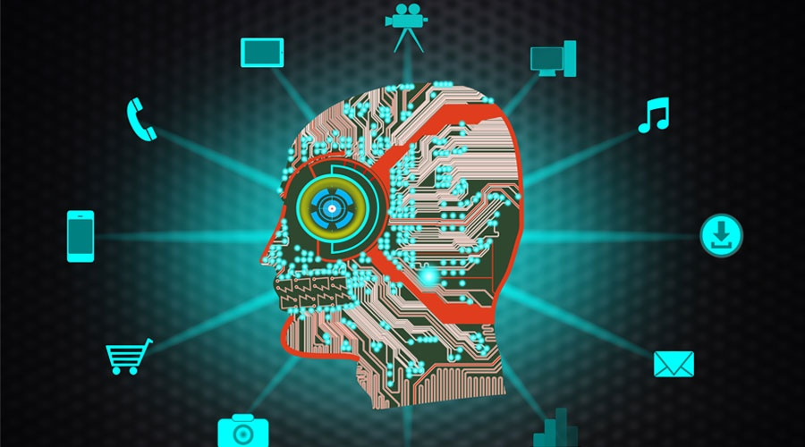

artificial intelligence
links
The concept of artificial intelligence
Artificial intelligence is defined as one of the branches of computer science, and that is the behavior and characteristics that different computer programs rely on, and is in line with human mental capabilities in various works. Among the most important of these capabilities is the ability of the machine to teach and make the right decisions.
Artificial intelligence capabilities
Artificial intelligence acquires information through practical practices, and is able to accurately distinguish between multiple issues.
One of the most important capabilities of artificial intelligence is its response to variables, and is characterized by flexibility and speed of reaction in all situations.
Artificial intelligence has its ability to perceive, and thus make decisions properly, depending on studying all the possibilities and mastering its results, and then choosing the best decisions that lead to the desired results.
Quickly be able to detect and correct errors, and make better improvements in the future.
It can be said that artificial intelligence began with the development of some different computer programs, chief among them chess games, when the scientist Claude Shannon drew up an algorithm that qualified the computer to play chess and anticipated all the possibilities of the other player's move.

Artificial intelligence areas
Artificial intelligence introduces all the technical fields that need logical thinking, knowledge, planning, and virtual perception based on applying theories and choosing the right solutions.
One of the most prominent areas in which simulation programs and applications are distinguished.
Industry through robots capable of performing the tasks of the human race.
Development of computer programs and applications in various fields, including medicine, engineering, trade and investment, among others.
Developing cognitive simulation through testing theories, face recognition, memory activation, and other functions.Development of engines with smart capabilities, such as driverless cars and drones.
Every new day, artificial intelligence touches a new door, especially the technology and computer industry.